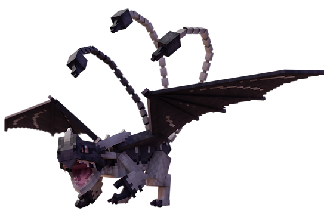
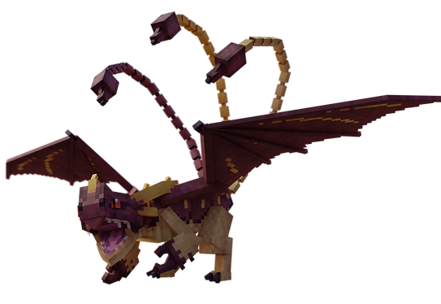
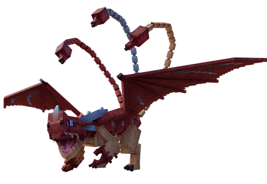
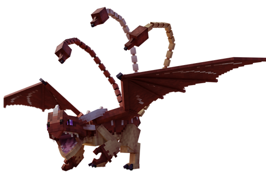
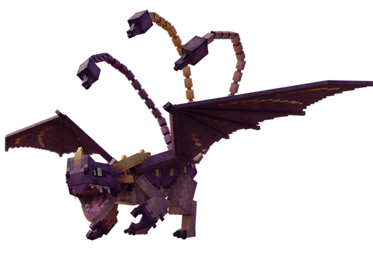
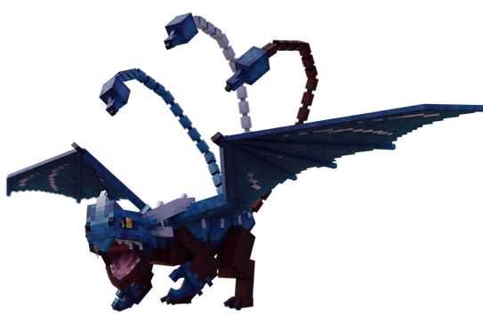
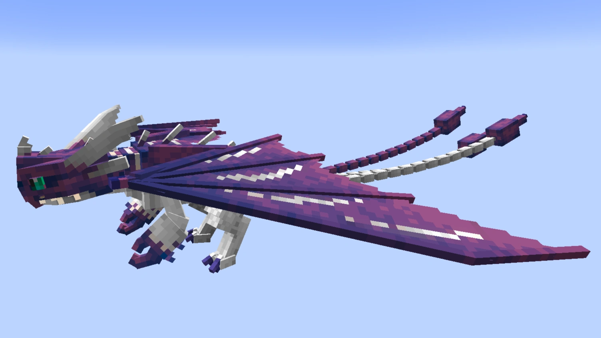
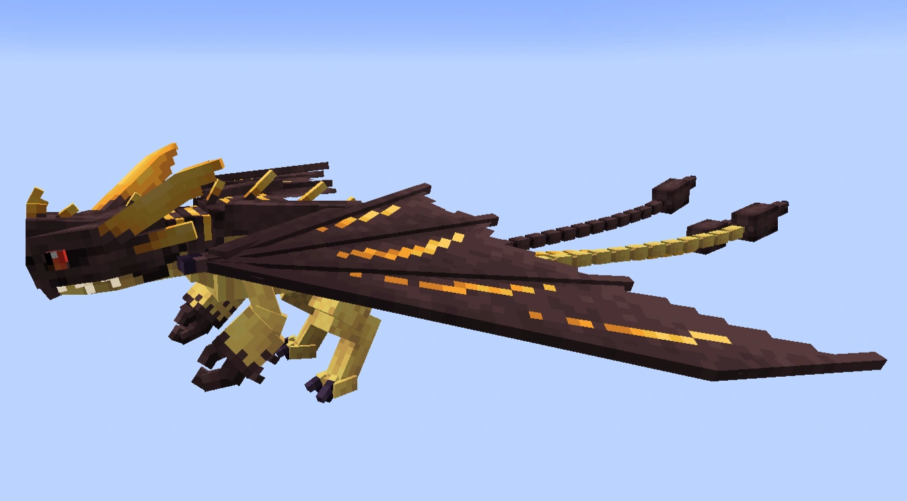
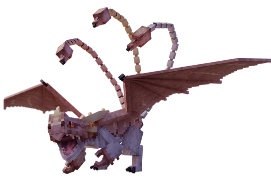
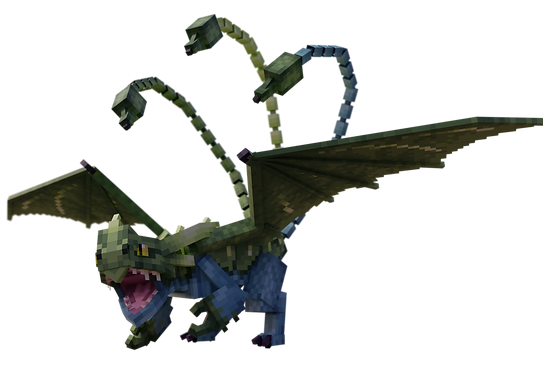

Triple Stryke
triple-dard, escrimeur ailéDescription
§ 1Trois queues venimeuses, frappe en mêlée avec une violence calculée.
Un escrimeur ailé — pas un canonnier. Un mur de viande blindé qui charge, pique, recule. Sa lourdeur en vol (0.1) est compensée par sa vitesse au sol et son armure massive (140 PV — le plus robuste du codex).
Dix variantes connues dont deux rares (Starstreak/Blue, 1/20) et une élite (Champion).
Capacités
§ 2Fire Breath
Souffle de feu standard, courte portée. Capacité utilitaire — le Triple Stryke compte avant tout sur sa mêlée.
Poisonous Sting — Triple Pique Empoisonnée
Trois queues, trois piques venimeuses. La hitbox TSStingArea n'est active que durant l'animation de dard (S34 fix : avant, elle était toujours active). Inflige empoisonnement persistant à l'impact.
Apprivoisement
§ 3Tier III — Par la défaite.
Nourriture : Bœuf (cuit ou cru).
Conditions : Le combattre jusqu'à reddition (20 cœurs de dégâts cumulés).
- Engage le combat — il chargera en mêlée avec ses trois piques.
- Inflige-lui 20 cœurs de dégâts (mécanique surrender, S18).
- Une fois en reddition : invincibilité 2,5 s puis passif 2 minutes.
- Approche-toi avec du bœuf et clic droit.
- L'apprivoisement se fait au seuil de la barre de progression.
Reproduction
§ 4Habitat
§ 5
Groupe A (rare · spawn rate 1) : Badlands, Wooded Badlands. Pack 0–2.
Groupe B (uncommon · spawn rate 5) : Taïgas, Snowy Taigas, Old Growth Pine Taiga, Old Growth Spruce Taigas. Pack 1–3.
Variantes (10)
§ 6
Variant 1
Eclipser
Sombre, marbrures grises

Variant 2
Nikora
Tons rouille

Variant 3
Starstreak
1/20 du taux normal

Variant 4
Triple Stryke
Forme commune

Variant 5
Spyro
Violacé sombre

Variant 6
Blue
1/20 du taux normal

Variant 7
Boreas
Tons glacés du nord

Variant 8
Sleuther
Marbré sombre

Variant 9
Rosethorn
Accessible via /summon — unused en spawn naturel selon le wiki

Variant 10
Champion
Variante d'élite — couronne de prestige
Trivia
§ 7- 140 PV — le dragon le plus robuste du codex.
- Variantes 3 (Starstreak) et 6 (Blue) : 1/20 du taux normal de spawn.
- Surrender mechanic : 20 cœurs → invincible 2,5 s puis passif 2 min (S18).
- Le Triple Stryke ne fuit jamais à bas HP (S34).
- Hitbox TSStingArea active uniquement durant l'animation de dard (avant S34 : permanente).
Commande /summon
§ 8/summon isleofberk:triple_stryke ~ ~ ~ {variant:4}
Variantes 1 à 10. La variant 4 est la forme commune.